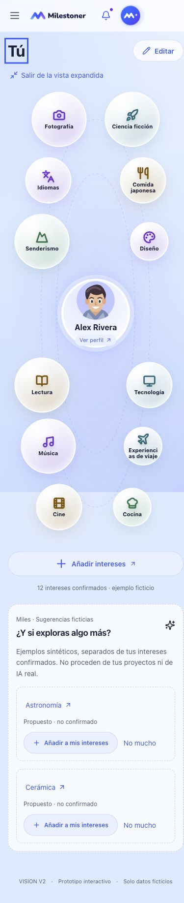

You · V2.5B.1c
Candidata visual · pendiente de revisión del propietario. Datos ficticios.
Abrir preview navegable
Escritorio 1440 px · comparación directa
Normal · ocho intereses visiblesExpandido · doce intereses y un único perfilMóvil
320 px · normal390 px · normal
390 px · expandido